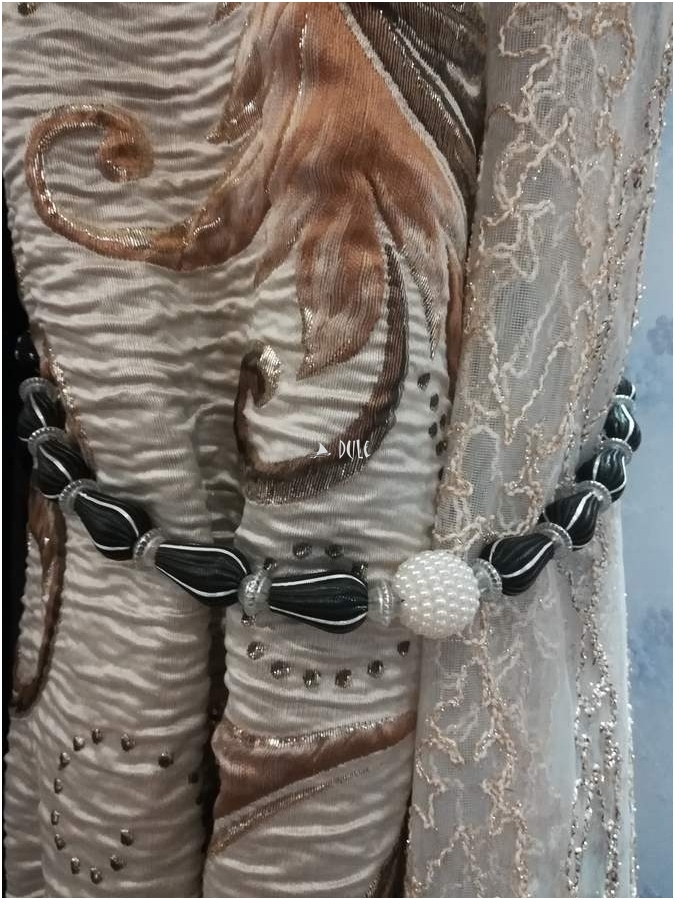

užuolaidos namams
Ausfanamams.lt - Užuolaidos, romanetės ir kita Jūsų namams

Interjero salonas „AUSFA“ Paslaugos Patarimai ir idėjos interjerui Pristatymas Kita informacija Apie mus Kontaktai 0 Pirkiniųkrepšelis Registruotis
Prisijungti Registruotis Prisijungti Namų tekstilė Lovatiesės (4) Pagalvėlės (7) Pledai (8) Staltiesės (0) Patalynė (0) Žiūrėti visus Namų tekstilė Interjero detalės Kitos interjero detalės (12) Nuotraukų rėmeliai (0) Užuolaidų aksesuarai (0) Vazos (13) Žvakidės (0) Žiūrėti visus Interjero detalės Namų kvapai Kvapai automobiliui (10) Kvapai namams (17) Kvepalai, losjonai, muilas (10) Kvepiančios žvakės (29) Žiūrėti visus Namų kvapai Dirbtinės gėlės Dirbtiniai medžiai (3) Gėlių žiedai (22) Vazoninės gėlės (2) Žiūrėti visus Dirbtinės gėlės Dovanos Dovanos moterims (73) Įkurtuvės (54) Proginės dovanos (82) Rinkiniai (13) Verslo dovanos (31) Žiūrėti visus Dovanos Tapetai Išpardavimas 0 Namų tekstilė Lovatiesės (4) Pagalvėlės (7) Pledai (8) Staltiesės (0) Patalynė (0) Interjero detalės Kitos interjero detalės (12) Nuotraukų rėmeliai (0) Užuolaidų aksesuarai (0) Vazos (13) Žvakidės (0) Namų kvapai Kvapai automobiliui (10) Kvapai namams (17) Kvepalai, losjonai, muilas (10) Kvepiančios žvakės (29) Dirbtinės gėlės Dirbtiniai medžiai (3) Gėlių žiedai (22) Vazoninės gėlės (2) Dovanos Dovanos moterims (73) Įkurtuvės (54) Proginės dovanos (82) Rinkiniai (13) Verslo dovanos (31) Tapetai Išpardavimas Registruotis/Prisijungti Registruotis Prisijungti Kita Interjero salonas Paslaugos Patarimai Pristatymas Kita informacija Apie mus Kontaktai
Itališkų kvapų galia kartu su AUSFA
Skaityti plačiauNaujiena-
Lovatiesės
Rinktis
Kvepiantys amuletai-
stiliaus detalė
Rinktis
Išpardavimas
Pledas AUSFA 1
€ 20.00€
Pledas AUSFA 2
€ 20.00€
Pledas AUSFA 3
€ 18.00€
Pledas AUSFA 4
€ 20.00€
Pledas AUSFA 5
€ 18.00€
Visi produktaiNamų tekstilė
Lovatiesės Pagalvėlės Pledai Staltiesės Patalynė Visi produktaiLOVATIESĖ BARLO, 240 x 220, dvi spalvos
€ 65
Dekoratyvinė pagalvėlė KLASIKA, 40 x 40 cm
€ 15
Dekoratyvinė pagalvėlė PAUKŠČIAI, 55 x 40 cm
€ 15
Dekoratyvinė pagalvėlė PELĖDA, 40 x 40 cm
€ 20
Visi produktaiTekstilės gaminiai Jūsų namuose - šiluma ir jaukumas!
SkaitytiNamų kvapai
Kvapai automobiliui Kvapai namams Kvepalai, losjonai, muilas Kvepiančios žvakės Visi produktaiAPYNIŲ SULA, Žiba collection sojų vaško žvakė, 220 ml
€ 35
AUSFA DECOR namų kvapas MYSTERY, 200ml
€ 35
Dovanų rinkinys apvalioje dėžutėje. BRANTMEDIS
€ 58
Dovanų rinkinys apvalioje dėžutėje. MEDIENA
€ 58
Visi produktaiJūsų namai dar nekvepėjo taip gerai!
SkaitytiKlientų atsiliepimai
5/5
7 apžvalgos4.9/5
85 apžvalgosDovanos
Dovanos moterims Įkurtuvės Proginės dovanos Rinkiniai Verslo dovanos Visi produktaiANTIKOS BIBLIOTEKA, Žiba collection sojų vaško žvakė, 220 ml
€ 35
APELSININĖ KALENDRA, Žiba collection sojų vaško žvakė, 220 ml
€ 35
POMIDORŲ DULKSNA, Žiba collection sojų vaško žvakė, 220 ml
€ 35
TABOKINIS MEDUS, Žiba collection sojų vaško žvakė, 220 ml
€ 35
Visi produktaiDovanų idėjos
SkaitytiPristatymas
Pasirinkite Jums patogiausią pristatymo būdą.
Garantija
Bendradarbiaujame tik su patikimais tiekėjais ir garantuojame už savo produkto kokybę.
Kokybė
Didelis audinių pasirinkimas leidžia sukurti išskirtinį tekstilės gaminį.
NAMAMS
Interjero prekės
Namų tekstilė Interjero detalės Namų kvapai Dirbtinės gėlės Dovanos TapetaiAusfa salonas
Interjero salonas „Ausfa“ Paslaugos Patarimai ir idėjosKita informacija
Pristatymas Kita informacija Apie mus KontaktaiSusisiekti galite
Tel.: +370 607 71663
+370 699 49852
El. p.: salonas@ausfa.lt
© 2017 Ausfa.lt
Sprendimas: E-Įvaizdis
Posted by Jack  Read more
Read more  Comments (15)
Comments (15)  2020.10.29 12:41
2020.10.29 12:41